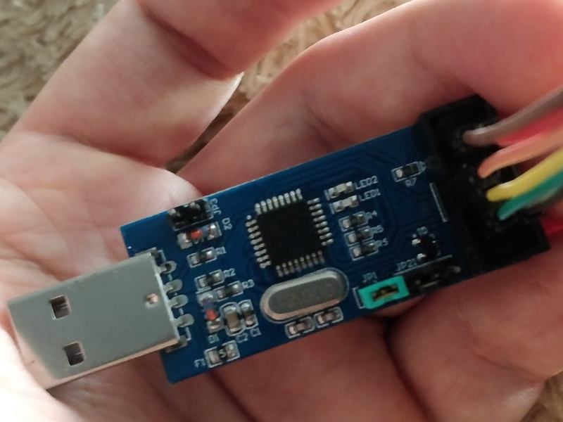
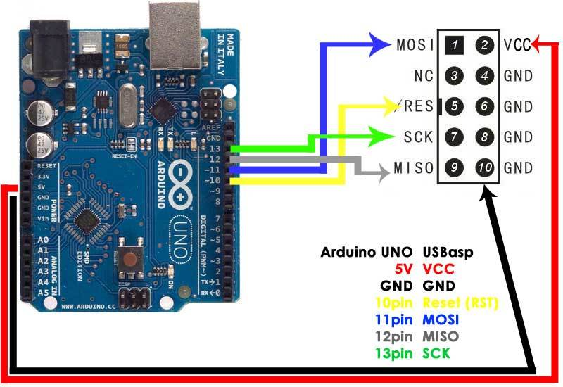

Обновление прошивки программатора USBASP с помощью Arduino UNO

Когда-то давно я приобрёл китайскую копию программатора USBASP. При попытке перепрошивки микроконтроллеров через ISP я, как и многие другие, получал ошибку следующего вида:
avrdude: warning: cannot set sck period, please check for usbasp firmware update
Инструкции, которые я обнаружил, были написаны с рассчётом на использование в Windows, а так же в некоторых статьях я заметил ошибки и несоответствия (например, неверно указан тип программатора для avrdude, из-за чего какое-то время пришлось побуксовать), так что решил написать для себя короткую статью, убрав всё лишнее.
Для начала нам нужен avrdude. Благо, в отличие от windows, нам не нужно искать, качать и ставить драйвера и всё прочее. Если уже установлена среда arduino, то avrdude можно найти по следующему относительному пути:
arduino-X.X.X/hardware/tools/avr/bin/avrdude
Где X.X.X - версия среды. Если же среды arduino на машине нет, то на debian-based системах установить avrdude можно из репозитория:
sudo apt-get install avrdude
В этом случае конфигурационный файл будет расположен тут: /etc/avrdude.conf, но среда нам понадобится, чтобы сменить прошивку на нашей текущей ардуине, с помощью которой будет прошиваться программатор.
Далее необходимо скачать самую "свежую" прошивку для USBASP:
wget https://www.fischl.de/usbasp/usbasp.2011-05-28.tar.gz
tar xvzf usbasp.2011-05-28.tar.gz
Да, самой свежей прошивке на текущий момент чуть менее девяти лет. Внутри архива нас интересует файл bin/firmware/usbasp.atmega8.2011-05-28.hex, его мы и будем прошивать.
Далее на плате программатора нужно замкнуть джампер JP1 (на фото установлен зелёный джампер), если его нет, нужно запаять или замкнуть пинцетом на время прошивки.

Затем соединяем проводами соответствующие пины Arduino и программатора:

Схему честно стырил из другой статьи. Теперь открываем среду Arduino, выставляем нужную плату (в нашем случае Arduino Genuino/UNO) и порт (в нашем случае /dev/ttyUSB0). Если вы не знаете, какой алиас получил интерфейс, среда сама должна подсказать. В любом случае, подсказку можно найти тут:
$ ls /sys/bus/usb-serial/devices/
ttyUSB0
Прошиваем скетч из примеров с названием ArduinoISP, на этом окно можно закрывать. В терминале переходим в директорию с avrdude внутри директории с ardunio и сперва проверим, что микроконтроллер нашего программатора виден через Arduino Uno по ISP:
$ ./avrdude -C ../etc/avrdude.conf -p atmega8 -c avrisp -b 19200 -P /dev/ttyUSB0 -v
avrdude: Version 6.3-20171130
Copyright (c) 2000-2005 Brian Dean, http://www.bdmicro.com/
Copyright (c) 2007-2014 Joerg Wunsch
System wide configuration file is "../etc/avrdude.conf"
User configuration file is "/home/corpse/.avrduderc"
User configuration file does not exist or is not a regular file, skipping
Using Port : /dev/ttyUSB0
Using Programmer : avrisp
Overriding Baud Rate : 19200
AVR Part : ATmega8
Chip Erase delay : 10000 us
PAGEL : PD7
BS2 : PC2
RESET disposition : dedicated
RETRY pulse : SCK
serial program mode : yes
parallel program mode : yes
Timeout : 200
StabDelay : 100
CmdexeDelay : 25
SyncLoops : 32
ByteDelay : 0
PollIndex : 3
PollValue : 0x53
Memory Detail :
Block Poll Page Polled
Memory Type Mode Delay Size Indx Paged Size Size #Pages MinW MaxW ReadBack
----------- ---- ----- ----- ---- ------ ------ ---- ------ ----- ----- ---------
eeprom 4 20 128 0 no 512 4 0 9000 9000 0xff 0xff
flash 33 10 64 0 yes 8192 64 128 4500 4500 0xff 0x00
lfuse 0 0 0 0 no 1 0 0 2000 2000 0x00 0x00
hfuse 0 0 0 0 no 1 0 0 2000 2000 0x00 0x00
efuse 0 0 0 0 no 0 0 0 0 0 0x00 0x00
lock 0 0 0 0 no 1 0 0 2000 2000 0x00 0x00
calibration 0 0 0 0 no 4 0 0 0 0 0x00 0x00
signature 0 0 0 0 no 3 0 0 0 0 0x00 0x00
Programmer Type : STK500
Description : Atmel AVR ISP
Hardware Version: 2
Firmware Version: 1.18
Topcard : Unknown
Vtarget : 0.0 V
Oscillator : Off
SCK period : 0.1 us
avrdude: AVR device initialized and ready to accept instructions
Reading | ################################################## | 100% 0.02s
avrdude: Device signature = 0x1e9307 (probably m8)
avrdude: safemode: lfuse reads as EF
avrdude: safemode: hfuse reads as D9
avrdude: safemode: Fuse reading not support by programmer.
Safemode disabled.
avrdude: safemode: lfuse reads as EF
avrdude: safemode: hfuse reads as D9
avrdude: safemode: lfuse reads as EF
avrdude: safemode: hfuse reads as D9
avrdude: safemode: Sorry, reading back fuses was unreliable. I have given up and exited programming mode
avrdude done. Thank you.
Если чип программатора отличается, проблема в соединении или имеются иные проблемы, мы увидим ворнинги следующего вида или им подобные:
avrdude: stk500_initialize(): (b) protocol error, expect=0x10, resp=0x01
avrdude: initialization failed, rc=-1
Double check connections and try again, or use -F to override
this check.
avrdude: stk500_disable(): protocol error, expect=0x14, resp=0x10
В этом случае нужно перепроверить всё ещё раз, особенно подключение. Далее имеет смысл сохранить текущую прошивку в файл на всякий случай (вместо /path/to/backup укажите свой путь):
$ ./avrdude -C ../etc/avrdude.conf -p atmega8 -c avrisp -b 19200 -P /dev/ttyUSB0 -U flash:r:/path/to/backup/original_firmware.bin:r
avrdude: AVR device initialized and ready to accept instructions
Reading | ################################################## | 100% 0.02s
avrdude: Device signature = 0x1e9307 (probably m8)
avrdude: reading flash memory:
Reading | ################################################## | 100% 5.74s
avrdude: writing output file "original_firmware.bin"
avrdude: safemode: Sorry, reading back fuses was unreliable. I have given up and exited programming mode
avrdude done. Thank you.
Прошиваем "свежую" прошивку девятилетней давности:
$ ./avrdude -C ../etc/avrdude.conf -p m8 -c avrisp -b 19200 -P /dev/ttyUSB0 -U flash:w:/path/to/firmwares/usbasp/usbasp.2011-05-28/bin/firmware/usbasp.atmega8.2011-05-28.hex
avrdude: AVR device initialized and ready to accept instructions
Reading | ################################################## | 100% 0.02s
avrdude: Device signature = 0x1e9307 (probably m8)
avrdude: NOTE: "flash" memory has been specified, an erase cycle will be performed
To disable this feature, specify the -D option.
avrdude: erasing chip
avrdude: reading input file "/path/to/firmwares/usbasp/usbasp.2011-05-28/bin/firmware/usbasp.atmega8.2011-05-28.hex"
avrdude: input file /path/to/firmwares/usbasp/usbasp.2011-05-28/bin/firmware/usbasp.atmega8.2011-05-28.hex auto detected as Intel Hex
avrdude: writing flash (4700 bytes):
Writing | ################################################## | 100% 6.78s
avrdude: 4700 bytes of flash written
avrdude: verifying flash memory against /path/to/firmwares/usbasp/usbasp.2011-05-28/bin/firmware/usbasp.atmega8.2011-05-28.hex:
avrdude: load data flash data from input file /path/to/firmwares/usbasp/usbasp.2011-05-28/bin/firmware/usbasp.atmega8.2011-05-28.hex:
avrdude: input file /path/to/firmwares/usbasp/usbasp.2011-05-28/bin/firmware/usbasp.atmega8.2011-05-28.hex auto detected as Intel Hex
avrdude: input file /path/to/firmwares/usbasp/usbasp.2011-05-28/bin/firmware/usbasp.atmega8.2011-05-28.hex contains 4700 bytes
avrdude: reading on-chip flash data:
Reading | ################################################## | 100% 3.31s
avrdude: verifying ...
avrdude: 4700 bytes of flash verified
avrdude: safemode: Sorry, reading back fuses was unreliable. I have given up and exited programming mode
avrdude done. Thank you.
Собственно, вот и всё.
Теги: avr